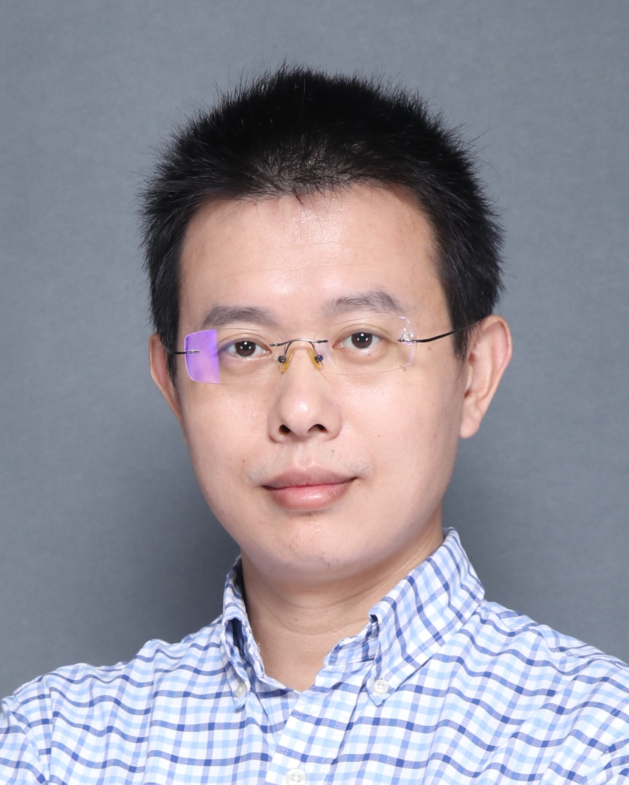

About Me
|
 |
CHEN Jie (陈杰)
Distinguished Research Fellow & Associate Professor School of Artificial Intelligence, Shenzhen University Room L6-608, Canghai Campus, Shenzhen University |
|
I am a Distinguished Research Fellow and Associate Professor at School of Artificial Intelligence, Shenzhen University. I am also a PhD supervisor and the Head of Intelligent Science Department, as well as the Associate Director of Embodied Intelligence and Robotics Institute. I am recognized as Shenzhen Overseas High-Level Talent (Category C). Research Interests: My research focuses on data-efficient learning (distributed learning, active learning) and trustworthy machine learning (interpretability, privacy preservation, robust learning). I am also working on large language models and multi-agent systems, embodied intelligence, and AI for Life Science (AI4LS). Links: Google Scholar | DBLP | Shenzhen University Profile |
News
2025: One paper accepted to AAAI 2025 on adversarial learning for robust leukemia classification.
2024: Awarded the First Prize of CAA Science and Technology Progress Award.
2024: Multiple papers accepted to AAAI 2024, CVPR 2024, ICCV 2023, IEEE TDSC, IEEE JBHI, etc.
2023: Awarded the First Class Achievement Award of CAAI Teaching Achievement Incentive Program.
Jun/2022: We have one paper accepted to CVPR 2022. [Paper]
Feb/2022: We have one paper accepted to IEEE Trans 2022. [Paper]
Education
Ph.D. in Computer Science, National University of Singapore (NUS), 2008-2013
Award: Dean's Graduate Award (2013)
M.Sc. in Computer Science and Technology, Zhejiang University, 2006-2008
B.Eng. in Electronic and Information Engineering, Taizhou University, 2002-2006
Work Experience
Associate Professor, School of Artificial Intelligence, Shenzhen University, 2025.02 - Present
Deputy Director, Health Big Data Research Center, National Engineering Laboratory for Big Data System Computing Technology, Shenzhen University, 2022.11 - Present
Distinguished Research Fellow, Shenzhen University, 2021.10 - Present
Assistant Professor, College of Computer Science and Software Engineering, Shenzhen University, 2021.04 - 2025.02
Associate Researcher, College of Computer Science and Software Engineering, Shenzhen University, 2018.05 - 2021.03
Postdoctoral Researcher, MIT Singapore Research Center (SMART), 2013.12 - 2018.03
Awards and Honors
First Prize, CAA Science and Technology Progress Award, 2024
First Class Achievement Award, CAAI Teaching Achievement Incentive Program, 2023
Outstanding Innovation and Entrepreneurship Mentor, 9th China International "Internet+" Innovation and Entrepreneurship Competition (Guangdong Division), 2023
Outstanding Instructor, RoboCom Robot Developer Competition, 2022
First Prize, Wu Wenjun Artificial Intelligence Science and Technology Progress Award (CAAI), 2019
Shenzhen Overseas High-Level Talent (Category C), 2018
Dean's Graduate Award (PhD), National University of Singapore, 2013
Research Achievement Award, National University of Singapore, 2012
Selected Student Awards
China International College Student Innovation Competition (2024) Guangdong Division: Gold Award; National Final: Silver Award, 2024
14th "Challenge Cup" Guangdong College Student Entrepreneurship Plan Competition: Gold Award, 2024
2023 Ascend AI Innovation Competition Shenzhen Regional: Gold Award, 2023
2023 RAICOM National Final: Second Prize, 2023
2022 RoboCom Robot Developer Competition CAIR Track: National Champion, 2022
Selected Patents
A graph relation network-based person counting method and related device, Patent No.: ZL202210545571.8, 2024-12-13
Microalgae cell fermentation regulation method, device, equipment and storage medium, Patent No.: ZL202410413166.X, 2024-08-23
A method, system and storage medium for detecting medical insurance fraud, Patent No.: ZL202010967115.3, 2024-05-07
Open reading frame prediction method, device and storage medium, Patent No.: ZL202310722247.3, 2024-03-19
UAV takeoff point prediction method and device, Patent No.: ZL202010101564.X, 2023-10-20
News
2025 One paper accepted to AAAI 2025 on adversarial learning for robust leukemia classification.
2024 Awarded the First Prize of CAA Science and Technology Progress Award.
2024 Multiple papers accepted to AAAI 2024, CVPR 2024, ICCV 2023, IEEE TDSC, IEEE JBHI, etc.
2023 Awarded the First Class Achievement Award of CAAI Teaching Achievement Incentive Program.
Jun/2022 We have one paper accepted to CVPR 2022. [Paper]
Feb/2022 We have one paper accepted to IEEE Trans 2022. [Paper]
Jan/2022 We have one paper accepted to IEEE Trans 2022. [Paper]